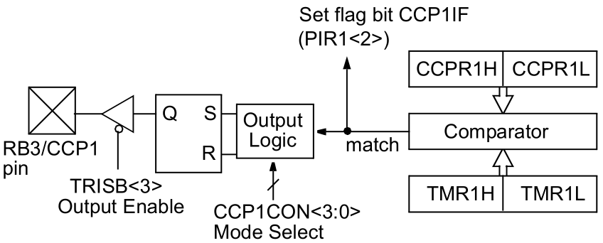

Episódio 18: Conhecendo o módulo CCP - Modo comparar e a interrupção associada
Voltar ao índice
Voltar ao Episódio 17
Ir para Episódio 19
Neste episodio continuaremos sobre o estudo do modulo CCP, porem abordaremos neste episodio o modo comparar, o qual o valor do resgistrador CCPR1 (CCPR1H e CCPR1L) é comparado constantemente ao registrador TMR1 (TMR1H e TMR1L).
Quando ocorre uma combinação no pino RB3/CCP1 pode ser:
- em uma subida;
- em uma descida;
- ou continua sem alteração em RB3
Um item importante é que RB3 deve ser um pino de saida.
A configuração é conforme a Tabela 18.1 e a Figura 18.1 mostra:
|
Tabela 18.1 - Bits de seleção do modo comparar
|
| CCP1M3 |
CCP1M2 |
CCP1M1 |
CCP1M0 |
Função |
| 0 |
0 |
0 |
0 |
desliga o modo comparar |
| 1 |
0 |
0 |
0 |
modo comparar ativo com saída setada sobre a combinação (CCP1F é setada) |
| 1 |
0 |
0 |
1 |
modo comparar ativo com saída limpa sobre a combinação (CCP1F é setada) |
| 1 |
0 |
1 |
0 |
modo comparar ativo com geração de interrupção por software sobre a combinação (olhar datasheet) |
| 1 |
0 |
1 |
1 |
modo comparar ativo com evento especial de gatilho (olhar datasheet) |
|
|
Fonte: ---------------------
|
|
Figura 18.1 - Diagrama de bloco de operação do modo de comparar
|
|

|
|
Fonte: --------------------
|
Exemplo: Pulsos gerados periodicamente no pino RB3 rever o codigo abaixo
|
Código 15.1 - Código do exemplo de uso da interrupção do Timer1
|
; CONFIGURACOES INICIAS
; D:\Program Files (x86)\Microchip\MPLABX\v5.30\mpasmx\p16f628a.inc
; D:\Program Files (x86)\Microchip\xc8\v2.10\mpasmx\p16f628a.inc
#INCLUDE <P16F628A.INC>
LIST P=16F628A
; REGISTER 14-1: CONFIGURATION WORD REGISTER
; CP: Flash Program Memory Code Protection bit
; LVP: Low-Voltage Programming Enable bit
; BOREN: Brown-out Reset Enable bit
; MCLRE: RA5/MCLR/V PP Pin Function Select bit
; PWRTE: Power-up Timer Enable bit
; WDTE: Watchdog Timer Enable bit
; XT: Max 4 MHz crystal
__CONFIG _BODEN_ON & _MCLRE_ON & _LVP_OFF & _WDT_OFF & _XT_OSC & _CP_OFF & _PWRTE_ON
#DEFINE W_TEMP 0x20
#DEFINE STATUS_TEMP 0x21
#DEFINE PADRAO_CCP B'00001000' ; PERMITE SETAR RB3 EM HIGH E FLAG CCP1IF
ORG 0x00 ; TRATAMENTO DO RESET
GOTO INICIAPARAMETROS
ORG 0x04 ; TRATAMENTO DAS INTERRUPCOES
MOVWF W_TEMP
SWAPF STATUS, 0
MOVWF STATUS_TEMP
BTFSS PIR1, TMR1IF ; INTERRUPCAO DOS PERIFERICOS (TIMER 1 - SECAO 7.0)
GOTO INTERRUPCAO_CCP
BCF PIR1, TMR1IF
;
; LINHAS PARA TRATAMENTO DA INTERRUPCAO DO TIMER 1
;
INTERRUPCAO_CCP:
BTFSS PIR1, CCP1IF ; INTERRUPCAO DOS PERIFERICOS (CCP 1 - SECAO 9.0)
GOTO SAIDA_INTERRUPCAO
BCF PIR1, CCP1IF
CLRF CCP1CON
MOVLW PADRAO_CCP
MOVWF CCP1CON
CLRF TMR1H
CLRF TMR1L
;
; LINHAS PARA TRATAMENTO DA INTERRUPCAO DO MODULO CCP
;
SAIDA_INTERRUPCAO:
SWAPF STATUS_TEMP, 0
MOVWF STATUS
MOVF W_TEMP, 0
RETFIE
INICIAPARAMETROS:
BCF STATUS, RP1
BSF STATUS, RP0 ; SELECIONA O BANCO 1 DE MEMORIA
MOVLW B'10000000' ; CONFIGURACOES DO REGISTRADOR OPTION
; 1 - 'RBPU -> DESATIVA RESISTORES PULL-UP
; 0 - INTDEG -> INT. ATIV. BORDA DE DESCIDA RB0
; 0 - TOCS -> O CLOCK DO TIMER 0 EH INTERNO
; 0 - TOSE -> BORDA DE SUBIDA NO TIMER 0, RA4
; (0)- PSA -> PRESCALER ASSOCIADO AO TIMER 0
; (1) -> PRESCALER ASSOCIADO AO WDT
MOVWF OPTION_REG ; 0 - PS2,PS1,PS0 -> TIMER 0 COM RAZAO 1:1
MOVLW B'00000101' ; CONFIGURACOES REG. DE INTERRUPCAO DE PERIFERICOS
; 0 - EEIE -> DESATIVA INT. ESCRITA COMPLETA EEPROM
; 0 - CMIE -> DESATIVA INT. DO COMPARADOR
; 0 - RCIE -> DESATIVA INT. DO USART
; 0 - TXIE -> DESATIVA INT. DE TRASMISSAO DO USART
; 0 - -> Unimplemented: Read as ?0?
; 1 - CCP1IE -> ATIVA INT. NO MODULO CCP1
; 0 - TMR2IE -> DESATIVA INT. TMR2 PARA PR2
; 1 - TMR1IE -> ATIVA INT POR OVERFLOW EM TMR1
MOVWF PIE1
MOVLW B'11111111' ; CONFIGURAÇÕES DO TRISA
; 1 - PINO RA7 COMO ENTRADA
; 1 - PINO RA6 COMO ENTRADA
; 1 - PINO RA5 COMO ENTRADA
; 1 - PINO RA4 COMO ENTRADA
; 1 - PINO RA3 COMO ENTRADA
; 1 - PINO RA2 COMO ENTRADA
; 1 - PINO RA1 COMO ENTRADA
; 1 - PINO RA0 COMO ENTRADA
MOVWF TRISA ; MODIFICA O COMPORTAMENTO DA PORTA
MOVLW B'11110111' ; CONFIGURAÇÕES DO TRISB
; 1 - PINO RB7 COMO ENTRADA
; 1 - PINO RB6 COMO ENTRADA
; 1 - PINO RB5 COMO ENTRADA
; 1 - PINO RB4 COMO ENTRADA
; 0 - PINO RB3 COMO SAIDA
; 1 - PINO RB2 COMO ENTRADA
; 1 - PINO RB1 COMO ENTRADA
; 1 - PINO RB0 COMO ENTRADA
MOVWF TRISB ; MODIFICA O COMPORTAMENTO DA PORTB
BCF STATUS, RP1
BCF STATUS, RP0 ; SELECIONA O BANCO 0 DE MEMORIA
; CMCON - COMPARATOR CONFIGURATION REGISTER
; C2OUT -> ESTADO DO BIT DA SAIDA DO COMPARADOR 2
; C1OUT -> ESTADO DO BIT DA SAIDA DO COMPARADOR 1
; C2INV -> ESTADO INVERSO DO BIT DA SAIDA DO COMPARADOR 2
; C1INV -> ESTADO INVERSO DO BIT DA SAIDA DO COMPARADOR 1
; CIS -> COMUTA A ENTRADA DO COMPARADOR DEPENDENDO DA CONFIGURACAO
; CM<2:0> -> BITS DE CONFIGURACAO DOS MODOS DOS COMPARADOES
; 000 - Comparators Reset (POR Default Value)
; 111 - Comparators Off
; 100 - Two Independent Comparators
; 010 - Four Inputs Multiplexed to Two Comparators
; 011 - Two Common Reference Comparators
; 110 - Two Common Reference Comparators with Outputs
; 101 - One Independent Comparator [Vin-(RA1) and Vin+(RA2)]
; 001 - Three Inputs Multiplexed to Two Comparators
MOVLW B'00000111' ; DEFINE O COMPORTAMENTO DOS COMPARADORES
MOVWF CMCON
; CCP1CON - CCP CONFIGURATION REGISTER
; bit 7 - Unimplemented: Read as '0'
; bit 6 - Unimplemented: Read as '0'
; bit 5 - CCP1X: PWM Least Significant bits
; bit 4 - CCP1Y: PWM Least Significant bits
; Capture Mode
; Unused
; Compare Mode
; Unused
; PWM Mode
; These bits are the two LSbs of the PWM duty cycle.
; The eight MSbs are found in CCPRxL.
; bit 3-0 CCP1M<3:0>: CCPx Mode Select bits
; 0000 = Capture/Compare/PWM off (resets CCP1 module)
; 0100 = Capture mode, every falling edge
; 0101 = Capture mode, every rising edge
; 0110 = Capture mode, every 4th rising edge
; 0111 = Capture mode, every 16th rising edge
; 1000 = Compare mode, set output on match (CCP1IF bit is set)
; 1001 = Compare mode, clear output on match (CCP1IF bit is set)
; 1010 = Compare mode, generate software interrupt on match
; (CCP1IF bit is set, CCP1 pin is unaffected)
; 1011 = Compare mode, trigger special event (CCP1IF bit is set;
; CCP1 resets TMR1
; 11xx = PWM mode
;MOVLW B'00001000' ; PERMITE SETAR RB3 EM HIGH E FLAG CCP1IF
;MOVLW B'00001001' ; PERMITE SETAR RB3 EM LOW E FLAG CCP1IF
;MOVLW B'00001010' ; PERMITE SETAR FLAG CCP1IF MAS NÃO INTERFERE EM RB3
;MOVLW B'00001011' ; PERMITE SETAR FLAG CCP1IF E RESETA TIMER 1
MOVLW PADRAO_CCP
MOVWF CCP1CON
MOVLW B'00001001' ; CONFIGURACOES DO TIMER 1
; 0 - NAO IMPLEMENTADO
; 0 - NAO IMPLEMENTADO
; 0 - T1CKPS<1>: Timer1 Input Clock Prescale Select
; 0 - T1CKPS<0>: Timer1 Input Clock Prescale Select
; 11 = 1:8 Prescale value
; 10 = 1:4 Prescale value
; 01 = 1:2 Prescale value
; 00 = 1:1 Prescale value
; 1 - T1OSCEN: Timer1 Oscillator Enable Control bit
; 1 = Oscillator is enabled
; 0 = Oscillator is shut off (1)
; 0 - 'T1SYNC: Timer1 External Clock Input Synchronization Control
; TMR1CS = 1
; 1 = Do not synchronize external clock input
; 0 = Synchronize external clock input
; TMR1CS = 0
; This bit is ignored.
; Timer1 uses the internal clock when TMR1CS = 0.
; 0 - TMR1CS: Timer1 Clock Source Select bit
; 1 = External clock from pin RB6/T1OSO/T1CKI/PGC (on the rising edge)
; 0 = Internal clock (F_OSC /4)
; 1 - TMR1ON: Timer1 On bit
; 1 = Enables Timer1
; 0 = Stops Timer1
MOVWF T1CON
; C/C 1 => CCPR1H "+" CCPR1L => 0xFF "+" 0xFF => 0xFFFF => 65535
; => 0xFFFF => 0xFF * "16^2" + 0xFF
; => 255 * 256 + 255 => 65535
MOVLW .200
MOVWF CCPR1H
MOVLW .10
MOVWF CCPR1L
; CCPR1H=200 E CCPR1L=10 => 200 * 256 + 10 = 51210 us
; TIMER 1 => TMR1H "+" TMR1L => 0xFF "+" 0xFF => 0xFFFF => 65535
; => 0xFFFF => 0xFF * "16^2" + 0xFF
; => 255 * 256 + 255 => 65535
CLRF TMR1H
CLRF TMR1L
MOVLW B'11000000' ; CONFIGURACOES DE INTERRUPCOES
; 1 - GIE -> ATIVA INT./CHAVE GERAL
; 1 - PEIE -> ATIVA INT. DOS PERIFERICOS
; 0 - T0IE -> DESATIVA INT. NO TMR0
; 0 - INTE -> DESATIVA INT. NO RB0/INT
; 0 - RBIE -> DESATIVA INT. MUDANCA RB<7:4>
; 0 - T0IF -> FLAG DE TRANSBORDO DO TMR0
; 0 - INTF -> FLAG DE RESPOSTA INT. RB0/INT
MOVWF INTCON ; 0 - RBIF -> FLAG DE RESPOSTA INT EM RB<7:4>
PROGRAMAPRINCIPAL:
NOP
NOP
NOP
GOTO PROGRAMAPRINCIPAL
END
|
|
Fonte: Autor 2020
|
Voltar ao topo da página
Voltar ao Episódio 17
Ir para Episódio 19
Voltar ao índice